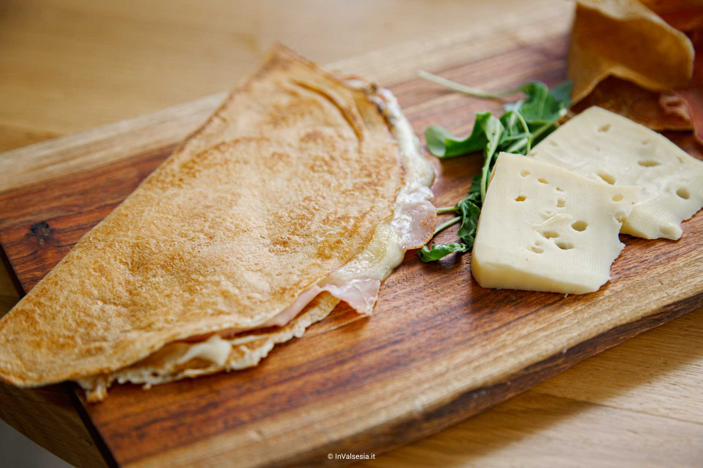
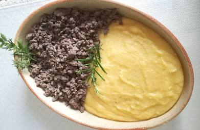
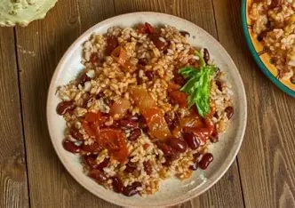

La miaccia Valsesiana

Le miacce sono una tipica ricetta piemontese, in particolare della Valsesia. Super versatili, possono diventare salate o dolci a seconda della farcitura
Scopri la ricetta
Le miacce sono una tipica ricetta piemontese, in particolare della Valsesia. Super versatili, possono diventare salate o dolci a seconda della farcitura
Scopri la ricetta
Pochi piatti hanno un così forte valore identitario e affettivo, e non solo per le regioni del nord, ma per la gente di montagna di tutta Italia, che la polenta, povera ma buona e sostanziosa, ha sfamato per secoli con grande dignità.
Scopri la ricetta
La paniscia Piemontese è una ricetta che affonda le sue radici nel passato, quando i nostri nonni utilizzavano gli ingredienti poveri a disposizione per rifocillarsi con un pasto caldo e nutriente.
Scopri la ricetta